Nicholas Green
Nicholas Green
For the full report and Matlab scripts
This projects goal is to unblur an image using Bayesian Statistics and Markov Chain Monte Carlo techniques. An image can be blurred in different ways making the situation difficult. The problem is simplified to only consider a known Gaussian blur meaning the algorithm must effectively deconvolve the blur with the blurred image.
The algorithm will work by proposing a hypothesized image and comparing it to the previous hypothesized image. This process is actually done for each pixel rather than the whole image at once to help reduce the dimensionality. The way in which the Bayesian posterior is defined will determine how well the algorithm works.
Bayes Theorem can be define as such where Y is a hypothesized reconstructed image, X is the given blurred image, and K is the Gaussian Blur Kernel. Each component is given a name defined below and must be defined starting with the Likelihood.
Bayes theorem must ask the question “what are the odds that the blurred image is produced by the hypothesized clear image” in the form of the Likelihood term. This can be done by simply comparing the given blurred image and a blurred version of the hypothesized image in the form of a Gaussian Curve creating an error term
The prior represents the odds of a hypothesized image given all prior information regardless of the blurred image. A simple neighborhood prior is used which basically enforces the idea that adjacent pixels tend to be close in value. For each pixel a Gaussian is constructed where its mean is the current pixel's value. This idea can be seen in the image above. Here, the prior enforces a dependency of pixels on each other. Without this each pixel would try to optimize itself without any consideration for the bigger picture.
A rough probability can be assigned to a hypothesized image. This probability can also be compared to another hypothesis by the ratio called the Acceptance Ratio. All that is left is to search the space of possible hypotheses. This will be done using the Metropolis-Hastings MCMC technique. First a hypotheses is generated by randomly modifying each pixel by adding a sample from the normal distribution multiplied by a step size. The Acceptance Ratio of the new hypotheses and the previous is calculated and clamped between 0 and 1. The new hypothesis is randomly accepted with odds equal to itself. A 50% Acceptance Ratio is accepted half the time. It is useful to accept bad hypothesis to avoid getting stuck in a local optimum. This process repeats until the change in RMS error between images is too small.
The results show the original image on the top row, the initial blurred image on the second row, and finally, the reconstructed image on the bottom row. The RMS error is given between the reconstruct and original image as well as the number of iterations required.
| Bird | Two Dice | Pagoda | Dice Rolled | Dice Stacked | Colosseum | |
| RMS Blurred | 13.84 | 14.05 | 18.98 | 14.66 | 13.07 | 13.87 |
| RMS Reconstructed | 8.85 | 7.43 | 13.23 | 9.25 | 8.29 | 9.71 |
| % Improvement | 36% | 47% | 30% | 37% | 37% | 30% |
This table shows the RMS error improvement after reconstruction as a percentage of the given blurred image RMS error